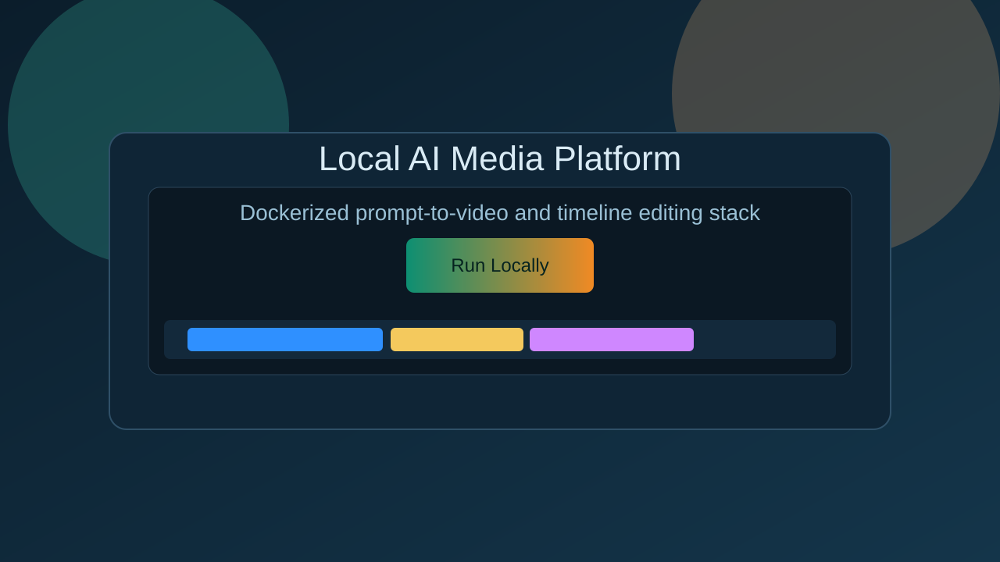

What Is Included
- FastAPI backend with job queue and editor APIs
- Static frontend served by nginx with
/apiproxying - Stable Diffusion worker with a fast smoke-test mode
Open Source AI Media Studio
A Dockerized FastAPI, nginx, and Stable Diffusion stack for prompt-to-video generation, local narration fallback, and multi-track MP4 timeline export.
This static page gives visitors the project overview. The full generation and editor experience runs locally through Docker.

/api proxyingThe Docker stack builds, health checks pass, prompt-to-video jobs complete, and captioned editor exports download as MP4.
git clone https://github.com/hridayeshp/local-ai-media-platform.git
cd local-ai-media-platform
docker compose up --build -d
# open http://localhost
Use SD_MOCK=true docker compose up --build -d for a quick full-stack smoke test
without downloading Stable Diffusion weights.